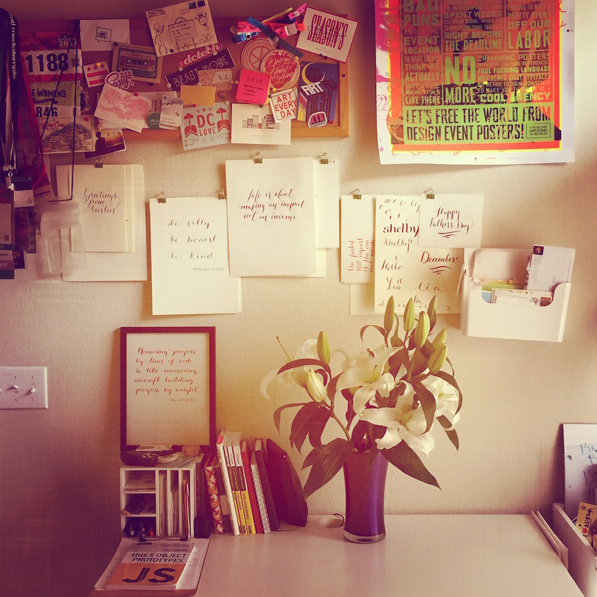

<div class="heading-area">
  <h2 class="heading--title">Instagram Filters in CSS: Toaster</h2>
</div>

<div class="live-code-area instagram">
  <div class="img-area">
    <div class="original">
      <figure class="insta-orig toaster"></figure>
      <p class="caption">Original</p>
    </div>
    <div class="filter">
      
      <p class="caption">Toaster</p>
    </div>
  </div>

  <div class="style-box-area">
  <style style="width: 75%; margin-top: -2em" class="code-editor" contenteditable>.toaster {
  -webkit-filter:
    contrast(1.5)
    brightness(.85);
}

.toaster:after{
  content: '';
  display: block;
  height: 100%;
  width: 100%;
  background: radial-gradient(circle, #804E0F, #3B003B);
  mix-blend-mode: screen;
}
</style>
  </div>

<aside class="notes">
  filters
</aside>
